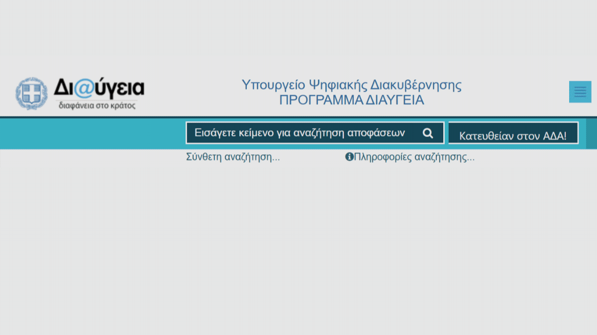

Στον ΑΔΑ!
Γλιτώστε τα περιττά κλικ στη Διαύγεια.
Άμεση μετάβαση στην
απόφαση με ΑΔΑ.
Γιατί να το χρησιμοποιήσετε;
- Ταχύτητα: Δεν ψάχνετε, βρίσκετε.
- Ιδιωτικότητα: Δεν συλλέγει δεδομένα. Ανοικτός κώδικας.
- Απλότητα: Ένα κουμπί δίπλα στην αναζήτηση.

Δείτε τον κώδικα στο GitHub Repository.